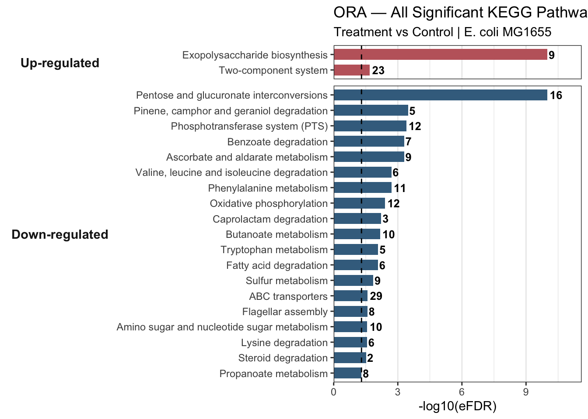
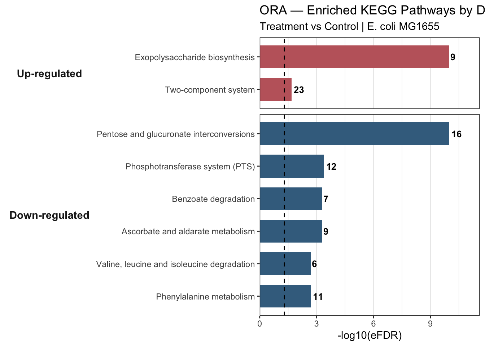
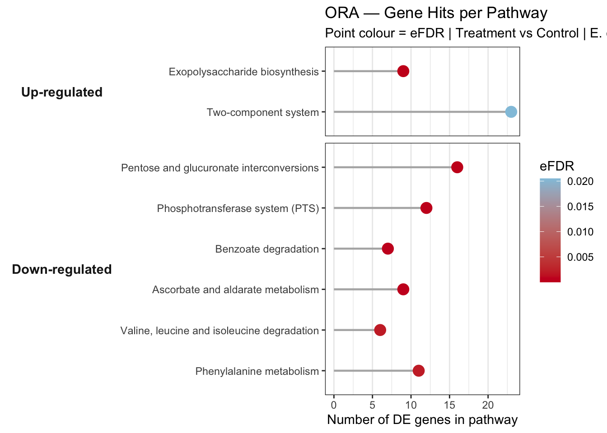

6.3 Part 1 — Over-Representation Analysis (ORA)
What is ORA?
ORA asks: “Are my significant DE genes enriched in any pathway more than expected by chance?”
It uses a hypergeometric test (equivalent to a one-sided Fisher’s exact test):
- Query set — significant DE genes (padj < 0.05, |LFC| >= 1), converted to gene symbols, split by direction (up- and down-regulated)
- Background — all genes tested by DESeq2, converted to gene symbols
- Gene sets — KEGG pathways
- FDR correction — empirical FDR (eFDR) via resampling, which accounts for interdependence between gene sets
Key assumption: ORA treats all significant genes equally — it ignores magnitude or direction of fold change. Running ORA separately on up- and down-regulated genes partially addresses this, and is why we split the query set below. For a fully ranked approach, see Part 2 (GSEA).
6.3.1 Prepare Input
We split significant genes by direction before running ORA. The background remains all genes tested by DESeq2, regardless of direction.
sig_up <- res_sig_sym %>% filter(log2FoldChange >= 1) %>% pull(gene)
sig_down <- res_sig_sym %>% filter(log2FoldChange <= -1) %>% pull(gene)
all_genes <- res_df_sym$gene
cat("Up-regulated genes :", length(sig_up), "\n")## Up-regulated genes : 258## Down-regulated genes : 388## Background (all tested) : 3698Tip: Always use all tested genes as the background, not the full
genome. DESeq2 already filtered to expressed genes, so res_df_sym is the
correct pool. Using the full genome inflates the background and produces over-optimistic
p-values.
6.3.2 Run ORA
ORA is run twice — once for up-regulated genes and once for down-regulated genes — using a helper function to avoid code duplication.
set.seed(42)
run_ora_mulea <- function(query, background, gmt) {
model <- ora(
gmt = gmt,
element_names = query,
background_element_names = background,
p_value_adjustment_method = "eFDR",
number_of_permutations = 1000
)
mulea::run_test(model)
}
ora_up <- run_ora_mulea(sig_up, all_genes, kegg_gmt)
ora_down <- run_ora_mulea(sig_down, all_genes, kegg_gmt)
cat("Up — pathways tested:", nrow(ora_up),
"| significant:", sum(ora_up$eFDR < 0.05, na.rm = TRUE), "\n")## Up — pathways tested: 121 | significant: 2cat("Down — pathways tested:", nrow(ora_down),
"| significant:", sum(ora_down$eFDR < 0.05, na.rm = TRUE), "\n")## Down — pathways tested: 121 | significant: 196.3.3 Filter and Inspect Significant Pathways
ora_up_sig <- ora_up %>% filter(eFDR < 0.05) %>% arrange(eFDR)
ora_down_sig <- ora_down %>% filter(eFDR < 0.05) %>% arrange(eFDR)
cat("Significant up pathways :", nrow(ora_up_sig), "\n")## Significant up pathways : 2## Significant down pathways: 19Up-regulated genes — enriched pathways
DT::datatable(
ora_up_sig %>%
select(ontology_id, ontology_name, nr_common_with_tested_elements,
nr_common_with_background_elements, p_value, eFDR) %>%
mutate(across(where(is.numeric), \(x) round(x, 4))),
rownames = FALSE,
colnames = c("KEGG ID", "Pathway", "Hits in query",
"Hits in background", "p-value", "eFDR"),
extensions = c("Buttons", "Scroller"),
options = list(dom = "Bfrtip", buttons = c("copy", "csv"),
scrollX = TRUE, scrollY = 300, scroller = TRUE),
caption = "Significant ORA pathways — UP-regulated genes (eFDR < 0.05)"
)Down-regulated genes — enriched pathways
DT::datatable(
ora_down_sig %>%
select(ontology_id, ontology_name, nr_common_with_tested_elements,
nr_common_with_background_elements, p_value, eFDR) %>%
mutate(across(where(is.numeric), \(x) round(x, 4))),
rownames = FALSE,
colnames = c("KEGG ID", "Pathway", "Hits in query",
"Hits in background", "p-value", "eFDR"),
extensions = c("Buttons", "Scroller"),
options = list(dom = "Bfrtip", buttons = c("copy", "csv"),
scrollX = TRUE, scrollY = 300, scroller = TRUE),
caption = "Significant ORA pathways — DOWN-regulated genes (eFDR < 0.05)"
)6.3.4 Visualization
ora_combined_all <- bind_rows(
ora_up_sig %>% mutate(direction = "Up-regulated"),
ora_down_sig %>% mutate(direction = "Down-regulated")
) %>%
mutate(
eFDR = ifelse(eFDR == 0, 1e-10, eFDR),
significance = -log10(eFDR),
direction = factor(direction, levels = c("Up-regulated", "Down-regulated")),
ontology_name = reorder(paste(ontology_name, direction, sep = "___"), significance)
)
ora_barplot_all <- ggplot(ora_combined_all,
aes(x = significance, y = ontology_name, fill = direction)) +
geom_col(width = 0.7, show.legend = FALSE) +
geom_text(aes(label = nr_common_with_tested_elements),
hjust = -0.2, size = 3.4, fontface = "bold") +
geom_vline(xintercept = -log10(0.05), linetype = "dashed",
color = "black", linewidth = 0.5) +
facet_grid(direction ~ ., scales = "free_y", space = "free_y", switch = "y") +
scale_y_discrete(labels = function(x) sub("___.*$", "", x)) +
scale_fill_manual(values = c("Up-regulated" = "#C1666B",
"Down-regulated" = "#406E8E")) +
scale_x_continuous(expand = expansion(mult = c(0, 0.16))) +
theme_bw() +
theme(
strip.background = element_blank(),
strip.placement = "outside",
strip.text.y.left = element_text(angle = 0, face = "bold", size = 11),
panel.grid.major.y = element_blank()
) +
labs(
title = "ORA — All Significant KEGG Pathways by Direction (eFDR < 0.05)",
subtitle = "Treatment vs Control | E. coli MG1655",
x = "-log10(eFDR)",
y = NULL
)
ora_barplot_all
6.3.5 Critical Interpretation — Spurious Hits
Always ask: does this pathway make biological sense for your organism?
Two pathways in our results deserve scrutiny:
Pinene, camphor and geraniol degradation (
eco00907) — a plant terpenoid pathway. It appears here because KEGG annotates a handful of E. coli enzymes with broad substrate specificity to this pathway. The perfect overlap (6 hits in query, 6 in background, eFDR = 0) is a red flag: a tiny gene set where every background gene is DE will always score as maximally significant, regardless of biological relevance.Caprolactam degradation (
eco00930) — same issue: only 3 genes in the background, all 3 in the query. Perfect overlap in a tiny set is statistically inevitable, not biologically meaningful.
Thinking strategy: 1. Check the gene set size — very small sets (< 5 genes) are prone to spurious enrichment 2. Check the overlap — 100% overlap is suspicious, not impressive 3. Ask whether the pathway is plausible for your organism and condition 4. Cross-reference with GSEA — if it does not appear there, treat it with scepticism
Spurious hits are removed from both directional result tables before visualisation.
clean_ora <- function(ora_results, direction_label) {
ora_results %>%
filter(!grepl("Pine|camphor|Caprolactam", ontology_name, ignore.case = TRUE)) %>%
mutate(direction = direction_label)
}
ora_up_clean <- clean_ora(ora_up_sig, "Up-regulated")
ora_down_clean <- clean_ora(ora_down_sig, "Down-regulated")
cat("Up pathways after cleaning :", nrow(ora_up_clean), "\n")## Up pathways after cleaning : 2## Down pathways after cleaning: 17Visualise ORA Results
6.3.6 Faceted Bar Plot — Enriched Pathways by Direction
Up- and down-regulated results are shown in separate facets, each ordered independently by significance. The gene count (number of DE genes hitting each pathway) is printed at the end of each bar.
ora_combined <- bind_rows(
ora_up_clean %>% slice_head(n = 6),
ora_down_clean %>% slice_head(n = 6)
) %>%
mutate(
eFDR = ifelse(eFDR == 0, 1e-10, eFDR),
significance = -log10(eFDR),
direction = factor(direction, levels = c("Up-regulated", "Down-regulated")),
ontology_name = reorder(paste(ontology_name, direction, sep = "___"), significance)
)
ora_barplot <- ggplot(ora_combined,
aes(x = significance, y = ontology_name, fill = direction)) +
geom_col(width = 0.7, show.legend = FALSE) +
geom_text(aes(label = nr_common_with_tested_elements),
hjust = -0.2, size = 3.4, fontface = "bold") +
geom_vline(xintercept = -log10(0.05), linetype = "dashed",
color = "black", linewidth = 0.5) +
facet_grid(direction ~ ., scales = "free_y", space = "free_y", switch = "y") +
scale_y_discrete(labels = function(x) sub("___.*$", "", x)) +
scale_fill_manual(values = c("Up-regulated" = "#C1666B",
"Down-regulated" = "#406E8E")) +
scale_x_continuous(expand = expansion(mult = c(0, 0.16))) +
theme_bw() +
theme(
strip.background = element_blank(),
strip.placement = "outside",
strip.text.y.left = element_text(angle = 0, face = "bold", size = 11),
panel.grid.major.y = element_blank()
) +
labs(
title = "ORA — Enriched KEGG Pathways by Direction (eFDR < 0.05)",
subtitle = "Treatment vs Control | E. coli MG1655",
x = "-log10(eFDR)",
y = NULL
)
ora_barplot
6.3.7 Lollipop Plot — Gene Hits per Pathway
Point colour encodes eFDR; position on x encodes how many DE genes from the query set hit each pathway. Facets separate the two directions.
ora_lollipop <- ggplot(ora_combined,
aes(x = nr_common_with_tested_elements,
y = ontology_name,
color = eFDR)) +
geom_segment(aes(x = 0,
xend = nr_common_with_tested_elements,
yend = ontology_name),
linewidth = 0.8, color = "grey70") +
geom_point(size = 4) +
facet_grid(direction ~ ., scales = "free_y", space = "free_y", switch = "y") +
scale_y_discrete(labels = function(x) sub("___.*$", "", x)) +
scale_color_gradient(low = "#CA0020", high = "#92C5DE", name = "eFDR") +
theme_bw() +
theme(
strip.background = element_blank(),
strip.placement = "outside",
strip.text.y.left = element_text(angle = 0, face = "bold", size = 11),
panel.grid.major.y = element_blank()
) +
labs(
title = "ORA — Gene Hits per Pathway",
subtitle = "Point colour = eFDR | Treatment vs Control | E. coli MG1655",
x = "Number of DE genes in pathway",
y = NULL
)
ora_lollipop